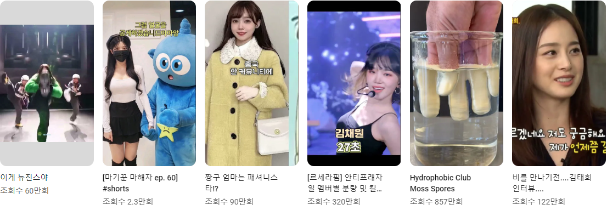

YouTube
홈
shorts
구독
보관함
시청 기록
내 동영상
나중에 볼 동영상
JSP!독학!
더보기
전체
게임
음악
실시간
뉴스
믹스
피트니스
최근에 업로드된 동영상
감상한 동영상
새로운 맞춤 동영상
《아바타 2: 물의 길》 || 역대급 3D 입체 영화의 부활 || 관람 전 필수 지식 & 세계관 완벽 총정리
《아바타 2: 물의 길》 || 역대급 3D 입체 영화의 부활 || 관람 전 필수 지식 & 세계관 완벽 총정리
《아바타 2: 물의 길》 || 역대급 3D 입체 영화의 부활 || 관람 전 필수 지식 & 세계관 완벽 총정리
《아바타 2: 물의 길》 || 역대급 3D 입체 영화의 부활 || 관람 전 필수 지식 & 세계관 완벽 총정리
《아바타 2: 물의 길》 || 역대급 3D 입체 영화의 부활 || 관람 전 필수 지식 & 세계관 완벽 총정리
《아바타 2: 물의 길》 || 역대급 3D 입체 영화의 부활 || 관람 전 필수 지식 & 세계관 완벽 총정리
《아바타 2: 물의 길》 || 역대급 3D 입체 영화의 부활 || 관람 전 필수 지식 & 세계관 완벽 총정리
《아바타 2: 물의 길》 || 역대급 3D 입체 영화의 부활 || 관람 전 필수 지식 & 세계관 완벽 총정리
Shorts
